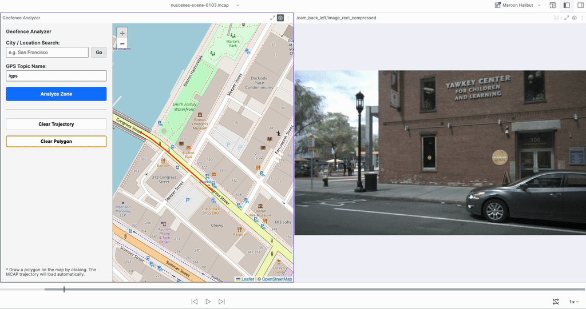
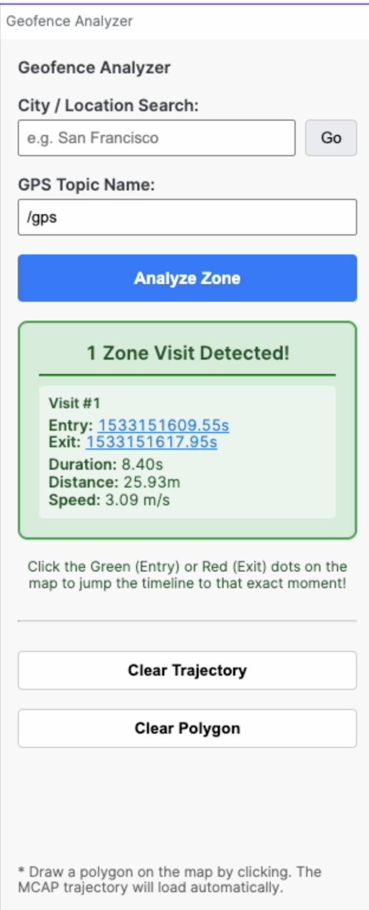

A Foxglove Studio Panel Extension that brings geospatial intelligence to robotics data. Draw virtual zones on a live map and instantly analyze when, where, and how fast your robot moved through them.

Demo (Drawing a polygon, Clearing, Drawing another polygon, Analyzing, Jumping to Entry and Exit
Example Use Cases
Hazard & Keep-Out Zones: Draw a polygon denoting a Hazard area to determine whether and when your robot enters it. See it visually and click the result to jump directly to the Entry/Exit timestamp.
Intersection & Traffic Light Analysis (AVs): Draw a polygon around a complex four-way intersection. Instantly find the exact timestamps the car traversed it to evaluate your planner’s yielding and stop-line behavior.
Speed Limit & School Zone Compliance: Because the tool calculates Average Speed inside the zone, you can draw a geofence around a known school zone or construction site to instantly verify if the autonomous vehicle respected the reduced speed limits.
Loading Dock Logistics (AMRs & Delivery): Draw a zone around a warehouse loading bay or drop-off point. The tool’s Duration metric instantly tells you exactly how long the robot loitered or idled in the bay, helping analyze operational efficiency.
GPS “Urban Canyon” Dead Zones: Draw a geofence over a known tunnel or downtown area with tall buildings. Click the entry timestamp to instantly jump to your 3D LiDAR/Camera panels to see how your localization stack handled the sudden drop in GPS quality.
Key Features
🌎 Global City Search: Instantly fly the map anywhere in the world using free OpenStreetMap geocoding.
📐 Interactive Geofencing: Click to draw custom polygons on the map.
⚡️ Instant Analysis: Powered by Turf.js to instantly calculate Duration, Metric Distance, and Average Speed for every visit (displayed in the Sidebar Stats).
⏱ Jump to Time, for both entry and exit: Click any Entry or Exit timestamp in the results to instantly synchronize your Foxglove 3D and Camera panels to that exact millisecond.

Installation
Go to the Releases page (or this repository’s releases) and download the latest .foxe file.
Open Foxglove Studio and navigate to Settings > Extensions.
Click Install Extension and select the downloaded .foxe file.
Open a new panel in your Foxglove layout and select Geofence Analyzer.
Quick Start Guide
Set Topic: Ensure the GPS Topic Name matches your recording (defaults to /gps).
Note: The topic must use the standard foxglove.LocationFix schema (or any custom message containing latitude and longitude fields). For example, in the converted nuScenes dataset, this is the /gps topic.
Find Location: Type a city name in the search box and click “Go” to quickly center the map.
Draw Zone: Click on the map to draw your geofence polygon (requires at least 3 points).
Analyze: Click the blue Analyze Zone button to instantly calculate all visits!
Local Development
If you want to modify or contribute to this extension:
# Clone the repositorygit clone <your-repo-url>cd geofence-analyzer# Install dependenciesnpm install# Install locally into your Foxglove Studio app for testingnpm run local-install# Package for release (generates the .foxe file)npm run package